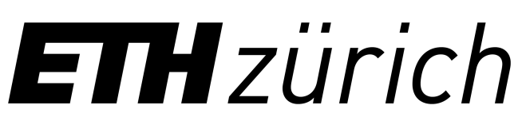

I am currently a Doctoral Student at ETH Zürich, working in the ChemInFlow Group at the University of Barcelona.
My research involves the investigation of dissipative non-equilibrium systems and the development of functional materials through design and synthesis of porous supramolecular networks. These aims will be
pursued using microfluidic techniques, investigating pathway selection in the formation of such networks, and studying the assembly and disassembly behaviour and how it may be controlled.
During the last two decades, engineering motion with small-scale matter has received much attention in several areas of research, ranging from supramolecular chemistry and colloidal science to robotics
and automation. The numerous discoveries and innovative concepts realized in motile micro- and nanostructures have converged in the field of small-scale swimmers. These man-made micro- and nanomachines
can move in fluids by transforming different forms of energy to mechanical motion. Recently, metal–organic frameworks (MOFs), which are crystalline coordination polymers with high porosity, have been
proposed as key building blocks in several small-scale swimmer designs. These materials possess the required features for motile micro- and nanodevices, such as high cargo-loading capacity,
biodegradability, biocompatibility, and stimuli-responsiveness. In this review, we take a journey through the major breakthroughs and milestones realized in the area of MOF-based small-scale swimmers.
First, a brief introduction to the field of small-scale swimmers is provided. Next, we review different strategies that have been reported for imparting motion to MOFs. Finally, we emphasize the
incorporation of molecular machines into the MOF’s architecture as the means to create highly integrated small-scale swimmers. The strategies and developments explored in this review pave the way toward
the use of motile MOFs for a variety of applications in the fields of biomedicine, environmental remediation, and on-the-fly chemistry.
Nicholas, J. D. & Chechik, V., J. Phys. Chem. B.124, 5646–5653 (2020).
Host–guest interactions between nitroxide stable radicals and supramolecular coordination cages were investigated using electron paramagnetic resonance (EPR) spectroscopy in water and acetonitrile. TEMPO
showed negligible association with the cages in water, while 4-oxo-TEMPO bound with a strength comparable to that previously reported for related ketones. Carboxylic acid-functionalized nitroxides bound
strongly to the acetonitrile-soluble coordination cages. In all cases, host–guest complex formation resulted in significant decreases in the molecular tumbling rate of the guests, with tumbling becoming
strongly anisotropic. The polarity of the cage environment in both solvents was found to be intermediate between water and acetonitrile.
Education
ETH Zürich, Switzerland
2019 - Current
Doctoral Studies in the Department of Chemistry and Applied Biosciences

University of York, UK
2017 - 2018
MSc by research in Chemistry
Gonville & Caius College, University of Cambridge, UK
2014 - 2017
BA (Hons) studying Natural Sciences, specialising in Chemistry